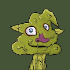 PooPooTown 进入厕所： poopootown.wtf poopoopeepee poopoo mmmmm fat poopoo yes poo peepee poo. 噗噗噗噗噗噗噗噗噗噗噗噗噗。 pooPee on ze BloKchAyneeeee cool 是的，是的。oKie 有 Nyce DayeE。 显然那个狗屎里有一些狗屎所以把手伸进
Poopy Bloot (not for Weaks) PoopyBLOOT 或 pBLOOT 或 pLOOT… 受 BLOOT 启发，我们添加了我们的专长，这是一个基于文本的交互式 NFT 在 etherscan 上获取您的BLOOT 持有者：1-8008 claimForBlootFREE for Everyone：800
Poor Dudes ▶ 什么是穷人？可怜的家伙是一个 NFT（不可替代令牌）集合。存储在区块链上的数字艺术品集合。 ▶ 有多少Poor Dudes 代币？总共有 9,999 个可怜的 Dudes NFT。
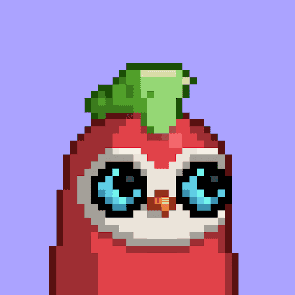 Poorletariat Shepherd 它是 Moonbird #4596 的 cNFT。Shepherd NFT 将持有者认定为Poorletariat 革命的领导者，并能够选择Poorletariat Flock 铸币厂的许可名
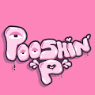 PooshinPee ▶ 什么是 PooshinPee？PooshinPee 是一个 NFT（不可替代令牌）集合。存储在区块链上的数字艺术品集合。 ▶ 有多少 PooshinPee 代币？总共有 6,969
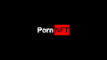 Porn NFT Community Pack 这是社区包 - 3000 个独特的 NFT，它们是 1:1 的，带有来自最大色情网站的视频的随机 URL。这是一个可收藏的代币，PornNFT 是精心挑选的 NFT 的集合，
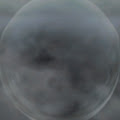 Porous Trainer ▶ 什么是多孔训练器？Porous Trainer 是一个 NFT（非同质代币）集合。存储在区块链上的数字艺术品集合。 ▶ 有多少 Porous Trainer 代币？总共有 100 个 Porous Trainer NFT。目
Portafolio Diversificado Platzees 5,000 套虚拟房屋的集合，每年以 USDT 支付股息，这些股息来自我们在美国的房地产投资组合的美元租金收入。 Portafolio Diversificado由 Rodrigo Blanco 和他的妻子 Luisa de
Portals by Gambi 2017 年至 2021 年间拍摄的 111 张门口照片的 NFT 摄影合集，这个项目是对世俗中的主观性和美的探索。这些照片拍摄于 2017 年至 2021 年之间， 门户是对世俗中的主观性和美的
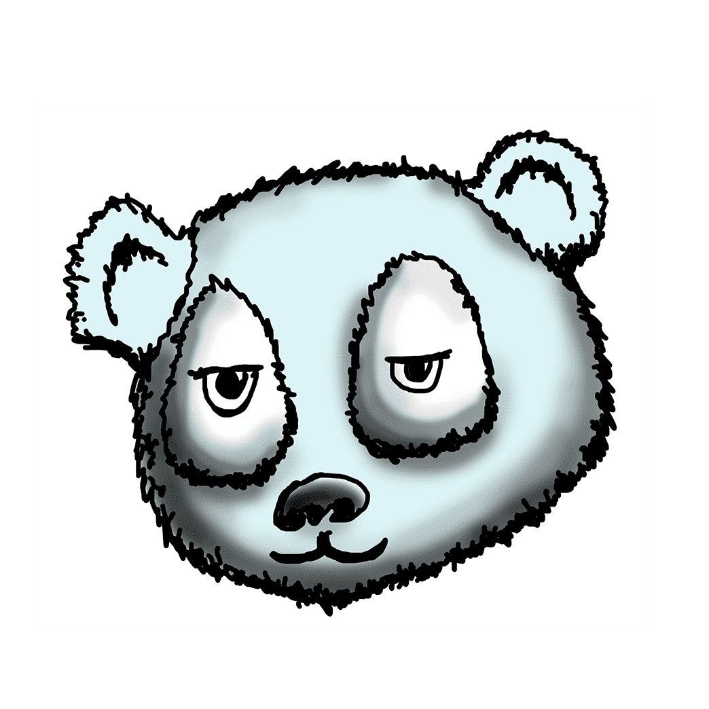 Positive Pandas ▶ 什么是正面熊猫？Positive Pandas 是一个 NFT（Non-fungible token）集合。存储在区块链上的数字艺术品集合。 ▶ 有多少 Positive Pandas 代币
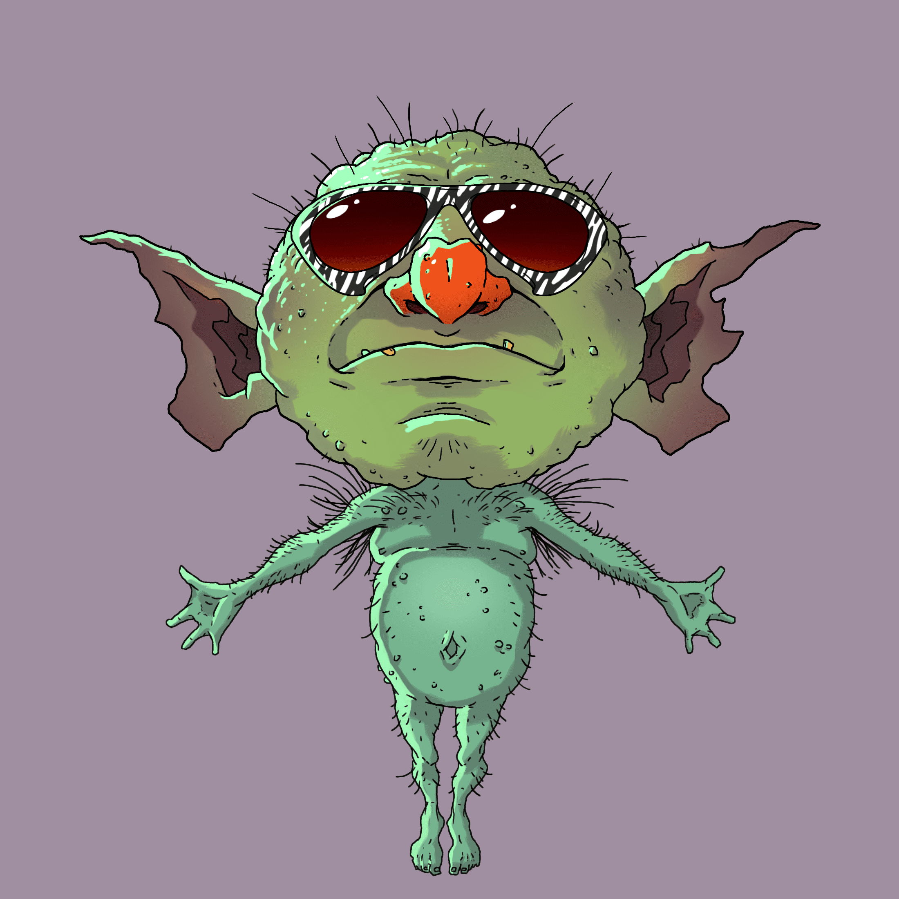 Possessed Goblins ▶ 有多少被附身的哥布林代币？总共有 1,121 个 Possessed Goblins NFT。目前 300 位所有者的钱包中至少有一个 Possessed Goblins NTF。 ▶ 什么是最昂贵的附身地精销售？售出的最昂贵的 Possessed
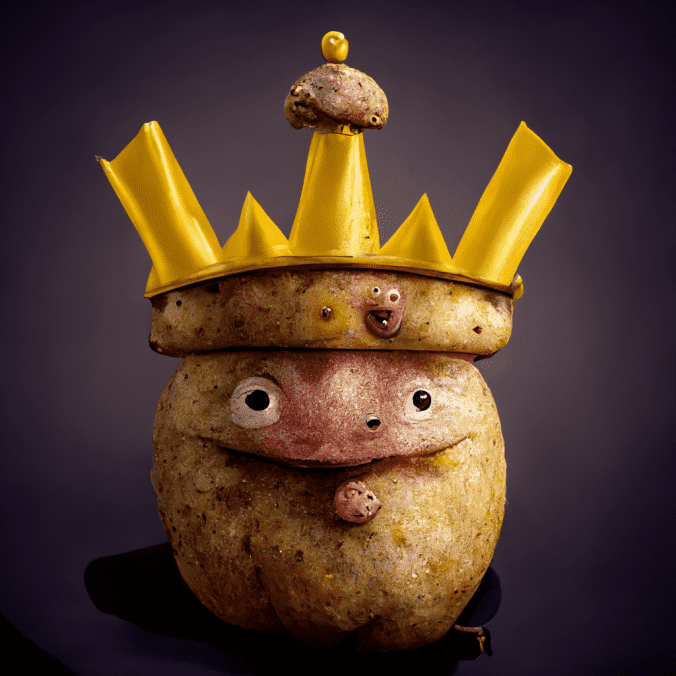 Pot-AI-toz Pot-AI-toz 是由以太坊区块链上的顶级人工智能技术制作的 1,111 个土豆的集合。 它们中的每一个都将作为 MemelAInd 后世界末日生态系统的入口。他们不会成为一个伟大的伙伴，事
Potatoez 它可以烤、炸、捣碎等等。抓住你独特的 Potatoez 来展示你在 NFT Universe 上吃到的最好的一餐。我们将成为下一个用真正的土豆制成的蓝筹股。 ▶ 什么是土豆？Potato
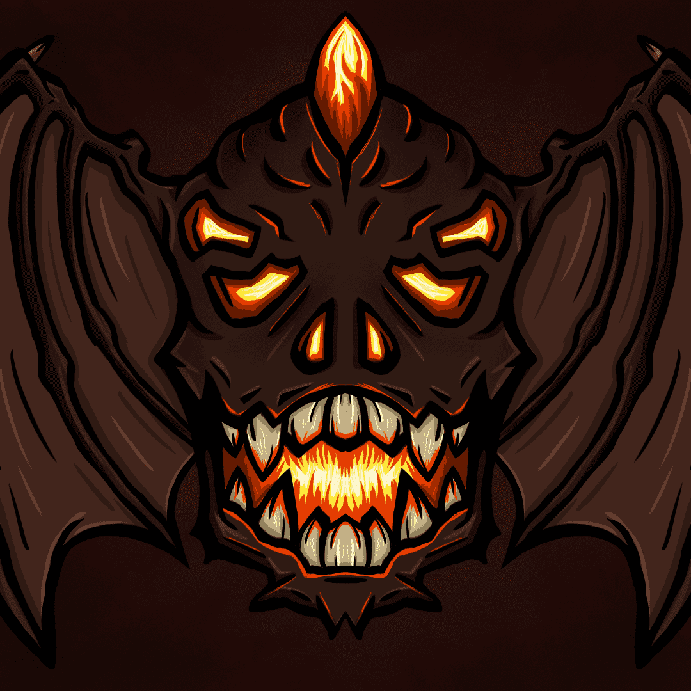 potatoztown 一个小镇 5555 土豆z 加入我们的家庭，我们保证不会炒你，除非你是妖精，当然。 是时候看看谁最有创意和幽默了！最佳模因奖品： 价值 100 美元的妖精手指 2x Potatoz NFT
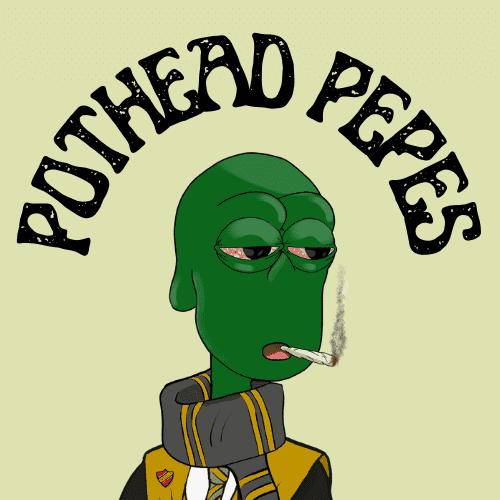 Pothead Pepes ▶ 什么是 Pothead #313？Pothead #313 是一个 NFT（非同质代币）集合。存储在区块链上的数字艺术品集合。 ▶ 有多少 Pothead #313 代币？总共有 32 个 Pothead #313 NFT。
PotsNFT 这是我的 NFT 相关项目的列表。它包括我的 NFT 收藏和我一直致力于帮助艺术家在 NFT 领域迈出第一步的免费资源。这是我的POTS NFT或Cheap Tricks Club NFT
Power Mystery Box ▶ 什么是神秘能量盒？Power Mystery Box 是一个 NFT（Non-fungible token）集合。存储在区块链上的数字艺术品集合。 ▶ 存在多少个 Power Mystery Box
Praise Pals [Official] 我们与名人、品牌和思想领袖合作，创造独一无二的 Web3 体验。我们的大部分收入直接回馈给社区或公益事业。 Pals 是以太坊区块链上 2,222 个独特角色的集合，代表着
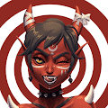 Pranksy Halloween 2020 ▶ 什么是HappyHalloween-？HappyHalloween- 是一个 NFT（非同质代币）集合。存储在区块链上的数字艺术品集合。 ▶ 有多
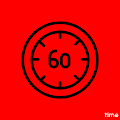 Pranksy Time 兑换此代币后，可通过 Discord 或 Twitter 与我（Pranksy）进行一小时的咨询时间。 当您想兑换此代币时，请通过适当的渠道与我联系，将代币发送给我，它将被烧
PrayersNFT ▶ 什么是拉辛格的祈祷？LASSINGER 的 THE PRAYERS 是一个 NFT（非同质代币）集合。存储在区块链上的数字艺术品集合。 ▶ LASSINGER 代币的 THE PRAYERS 有多少？LASS
Praying Hands Club 来自我们的零售合作伙伴 Whitelabel MFG 的所有全国销售额的 11% 将以 PHC 的实用代币 BLE$$ 代币的形式流向持有者和社区选择的慈善机构。 祈祷之手俱乐部将提供 2,222 个 NFT，它
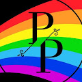 Precious Baby Phepes 珍贵的婴儿菲佩斯 有关收集、质押机制以及 $PHEPE 将如何产生的信息。Baby Phepes 将成为您进行质押的门户。本文旨在回答您对质押机制的所有疑问。如有任何进一
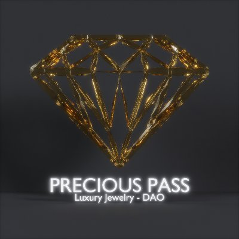 PreciousPass NFT Precious Pass NFT PROJECT，供应：3499，白名单铸币厂价格：0.045，公共铸币厂价格：0.066 Precious Pass 是在以太坊区块链上创建的 3499 NFT 的集合。49 个
Presessence Vol 1 - The Album Presessence Volume 1 是多学科艺术家 Domino 的专辑和 NFT 项目。 专辑 NFT 薄荷糖已关闭 - 从 2021 年 10 月到 2021 年 12 月，您可以在一次交易中以 0.0777 的价格获得所有 7 首歌曲 nft。 这张专辑
Pretty Pop Pink ▶ 什么是漂亮流行粉色？ Pretty Pop Pink 是一个 NFT（不可替代代币）系列。存储在区块链上的数字艺术品集合。 ▶ 有多少 Pretty Pop Pink 代币？ 总共有 98 个 Pretty Pop Pink NFT。目
Pride Goblins ▶ 什么是骄傲地精？ Pride Goblins 是一个 NFT（不可替代令牌）集合。存储在区块链上的数字艺术品集合。 ▶ 有多少个骄傲地精代币？ 总共有 1,000 个 Pride Goblins NFT。目前，
Pride Icons Pride Icons 是由 Max Bahman 创建的有限的流行艺术 NFT 数字集合。该系列分为三组，每组都有不同的特征和属性。尽管有些比其他的更稀有，但所有 Pride Icon 都以自己的方式精彩、
PridePass PridePass 是第一个结合 IRL 活动、赠品、职业支持和未来收入分享的 Alpha 通行证。令人兴奋的是，大部分版税都用于推动 LGBTQI+ 倡议和支持的组织。这些实际上是写入智能合约
Prif Game 1 ▶ 什么是Prif Game 1？ Prif Game 1 是一个 NFT（非同质代币）集合。存储在区块链上的数字艺术品集合。 ▶ 存在多少 Prif Game 1 代币？ 总共有 1,269 个 Prif Game 1 NFT。目
Primates NFT Collection Official 灵长类社会协会（PSS）是一个复杂的猿化身 NFT 集合，灵感来自我们在 DeFi 中堕落的兄弟姐妹。我们美丽的 Ape Queen Knifebebe 手绘了数百层（每层 2-4 小时），这些层通过算
Prime Ape Athletes | NFT 存储在以太坊网络上的独特手绘 Athletic Prime Apes 的 Genesis 集合。 拥有超过 777 个手绘 NFT，每个 Apelete 都是独一无二的，并且拥有一个由成功的投资者和体育爱好者组成的独家团
Prime Baby Kongz 3333 Prime Baby Beans 采用优质 NFT 算法创建，其所有权记录并存储在Klaytn 区块链上。 Prime Baby Kongz可以用作虚拟世界空间中的化身。您还可以使用它来享受许多仅
Prime Mates Board Club NFTs Prime Mates Board Club 是一个生成的 NFT PFP 集合，其中包含 2222 个独特的手绘灵长类动物碎纸机，准备好在第一季投放到区块链上。 Prime Mates Board Club 提倡与滑板骑行文化以及以这些运动